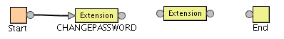
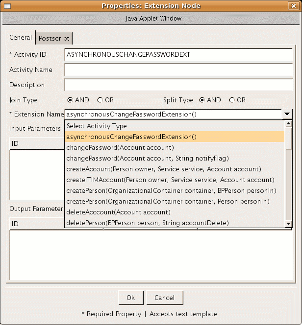

|
|
|

Running the Workflow Application Extension API Examples
Overview
Register Custom Classes with workflowextensions.xml
Register Servlet with the Application Server
Define Workflow with Extensions using ISIM UI
Overview
The Workflow Application Extension API does not contain any classes but does define the interfaces that allow the creation of custom classes that can be registered with the Provisioning System and subsequently processed by the workflow engine and accessed by the workflow designer. The intent of this API is to enable third parties to develop their own custom extensions that can then be used as workflow objects within the provisioning system.
In order to demonstrate the capabilities of this interface, the following examples are provided:
- AsynchronousApplicationExtension.java - An example of an Asynchronous application that can be called from Workflow
- SynchronousApplicationExtension.java - An example of a Synchronous application that can be called from Workflow
An example of creating an example where a custom approver is looked up in a database table is provided in the customApprover folder.
Adding workflow extensions and Registering Custom Classes
Do these steps to add a workflow extension.
1. Log on to the IBM Security Identity Manager virtual appliance console to open the Appliance Dashboard.
2. From the top-level menu of the Appliance Dashboard, select Configure > Advanced Configuration > Library and Workflow Extension to display the Library and Workflow Extension page.
3. Click New to add an external library.
4. In the Add External Library window, click Browse to search and upload the library file. The File Name field is populated with the library name. For example, examples.jar.
5. Select the Workflow Extension check box to include the extension information.
6. Provide the information in the Extension field.
7. Copy the following extension snippet in the Extension field of the Library and Workflow Extension page in the IBM Security Identity Manager virtual appliance console.
Modify it according to the needs of custom class for the input & output parameters.
Here is what it looks like for the above mentioned examples (no input & output parameters used for the above mentioned examples).
<ACTIVITY ACTIVITYID="asynchronousChangePasswordExtension" LIMIT="600000"> <IMPLEMENTATION_TYPE> <APPLICATION CLASS_NAME="examples.workflow.AsynchronousApplicationExtension" METHOD_NAME="asynchronousChangePasswordExtension" /> </IMPLEMENTATION_TYPE></ACTIVITY><ACTIVITY ACTIVITYID="synchronousChangePasswordExtension" LIMIT="600000"> <IMPLEMENTATION_TYPE> <APPLICATION CLASS_NAME="examples.workflow.SynchronousApplicationExtension" METHOD_NAME="synchronousChangePasswordExtension" /> </IMPLEMENTATION_TYPE></ACTIVITY>
Register Servlet with the Application Server
1. Log on to the IBM Security Identity Manager virtual appliance console to open the Appliance Dashboard.
2. From the top-level menu of the Appliance Dashboard, select Configure > Advanced Configuration > Custom File Management.
3. On the Custom File Management page, click the All Files tab.
4. Go to the directories/itim_console.war/WEB-INF directory.
5. Select the web.xml file in the table of the right pane.
6. Click Download.
7. Edit the web.xml file to register the example servlet.
Here is what it looks like for the ExampleStartupServlet.
<servlet id="Servlet_1054249474210"> <servlet-name>ExampleStartupServlet</servlet-name> <description>Startup of workflow activity asynchronously</description> <servlet-class>examples.workflow.ExampleStartupServlet</servlet-class> <load-on-startup>1</load-on-startup></servlet>
Here is the default location for web.xml:
directories/itim_console.war/WEB-INF/web.xml
This ExampleStartupServlet on initial load will create a
CompleteAsynchronousActivity daemon thread which runs as a background service
which will periodically (every 1 minute) checks the ExampleActivity.id to see
if there is any activity pending, if so reads the activity id from the file and
completes the activity.
Note: Please make sure to unregister the ExampleStartupServlet from web.xml once done working with the examples and restart the server.
In order to run these examples,
Define Workflow with Extensions using ISIM UI
In order to define workflow extensions,
- Make sure the Application server is running.
- Open a web browser and login to ISIM application.
- Navigate to Configure System > Manage Operations.
- Select the Entity Type radio button.
- Select Account as Entity Type and check the changePassword row.
- Click on the Change button.
- Remove the transition from CHANGEPASSWORD to End
- Add
a new extension node between CHANGEPASSWORD to End.
 - Double-click
on the new Extension node, you will see a new pop-up window which
will show you all the extensions registered using the workflowextensions.xml.
 - Set Activity ID as ASYNCHRONOUSCHANGEPASSWORDEXT and select asynchronousChangePasswordExtension() for Extension Name.
- Click Ok button and attach the transitions to the newly added extension.
- Click
Ok to save the workflow.
- Navigate to Password
Management and change password.
Note: Please see that the password is changed for a single account. This example will not work if the password is changed for multiple accounts simultaneously. - In the auditLog of the change password request, you will see two activities.
- One for Change Password.
- The other for ASYNCHRONOUSCHANGEPASSWORDEXT.